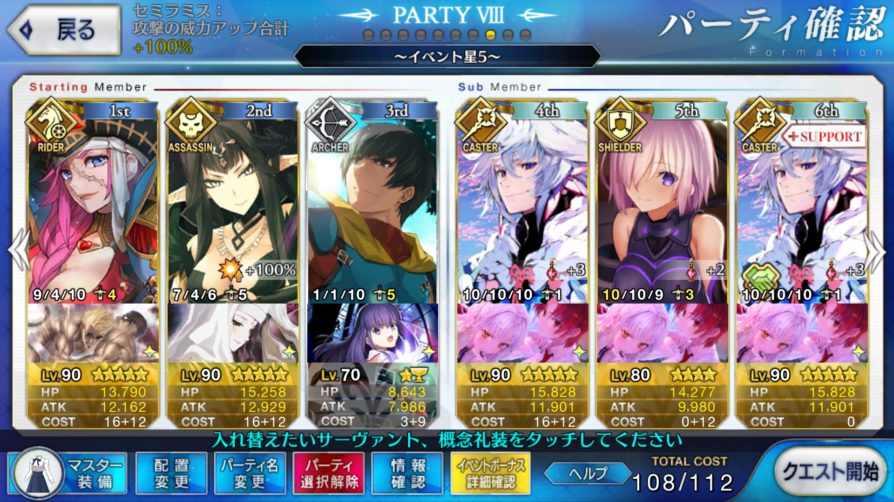
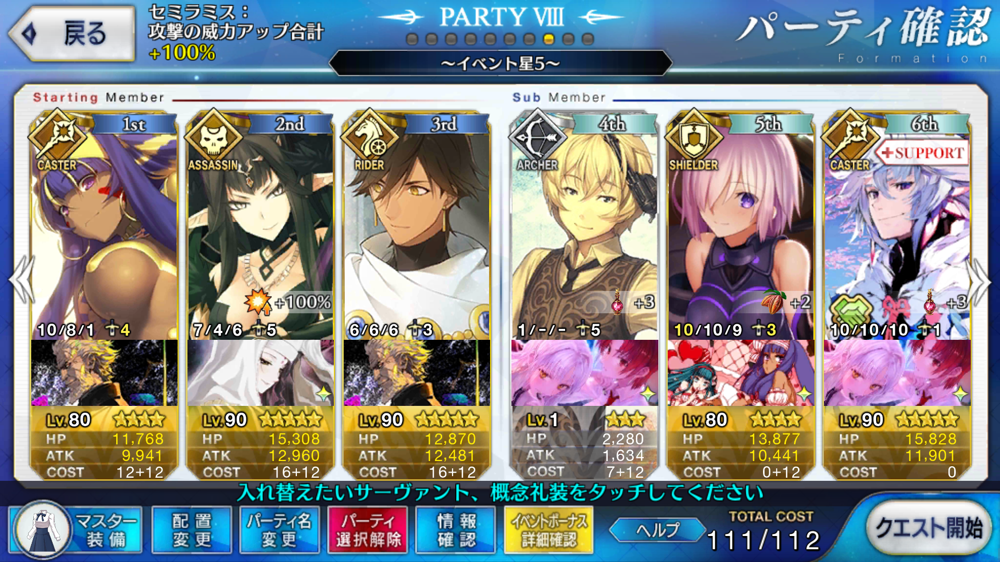

<!DOCTYPE HTML>
<html>
<head><meta name="generator" content="Hexo 3.9.0">
  <meta charset="utf-8">
  
  <title>【FGO】繁栄のチョコレートガーデンズ・オブ・バレンタイン ブラック級（2/8まで） | ぷらずま式改</title>
  <meta name="author" content="NPlasma">

  
  <meta name="description" content="NPlasmaの個人メモ">
  

  

  <meta name="viewport" content="width=device-width, initial-scale=1, maximum-scale=1">

  <meta property="og:title" content="【FGO】繁栄のチョコレートガーデンズ・オブ・バレンタイン ブラック級（2/8まで）">
  <meta property="og:site_name" content="ぷらずま式改">

  
  

  
    <meta property="og:image" content="/img/ogp.png">
  

  <!-- ogp -->
  
    
      <meta name="description" content="この記事ではFGOイベントの周回を扱います。 編成画像にて最終再臨絵のネタバレがあるのでご注意を">
<meta name="keywords" content="Fate,ゲーム,FGO,Fate&#x2F;GrandOrder,FGOバレンタイン2018">
<meta property="og:type" content="article">
<meta property="og:title" content="【FGO】繁栄のチョコレートガーデンズ・オブ・バレンタイン ブラック級（2&#x2F;8まで）">
<meta property="og:url" content="http://elleonard.github.io/nplus_doc/2018/02/05/game/fate/fgo/chocolate-garden/black-to-0208/index.html">
<meta property="og:site_name" content="ぷらずま式改">
<meta property="og:description" content="この記事ではFGOイベントの周回を扱います。 編成画像にて最終再臨絵のネタバレがあるのでご注意を">
<meta property="og:locale" content="ja">
<meta property="og:image" content="http://elleonard.github.io/nplus_doc/2018/02/05/game/fate/fgo/chocolate-garden/black-to-0208/black-to-0208.png">
<meta property="og:image" content="http://elleonard.github.io/nplus_doc/2018/02/05/game/fate/fgo/chocolate-garden/black-to-0208/black-to-0208-2.png">
<meta property="og:updated_time" content="2019-09-13T04:56:39.126Z">
<meta name="twitter:card" content="summary">
<meta name="twitter:title" content="【FGO】繁栄のチョコレートガーデンズ・オブ・バレンタイン ブラック級（2&#x2F;8まで）">
<meta name="twitter:description" content="この記事ではFGOイベントの周回を扱います。 編成画像にて最終再臨絵のネタバレがあるのでご注意を">
<meta name="twitter:image" content="http://elleonard.github.io/nplus_doc/2018/02/05/game/fate/fgo/chocolate-garden/black-to-0208/black-to-0208.png">
<meta name="twitter:creator" content="@elleonard_f">
    
    <meta name="twitter:image" content="http://elleonard.github.io/nplus_doc/img/ogp.png">
  

  <link rel="alternate" href="/nplus_doc/atom.xml" title="ぷらずま式改" type="application/atom+xml">
  <link rel="stylesheet" href="/nplus_doc/css/style.css" media="screen" type="text/css">
  <!--[if lt IE 9]><script src="//html5shiv.googlecode.com/svn/trunk/html5.js"></script><![endif]-->
  


  <link rel="apple-touch-icon" sizes="180x180" href="/nplus_doc/favicon/apple-touch-icon.png">
  <link rel="icon" type="image/png" sizes="32x32" href="/nplus_doc//favicon/favicon-32x32.png">
  <link rel="icon" type="image/png" sizes="16x16" href="/nplus_doc//favicon/favicon-16x16.png">
  <link rel="manifest" href="/nplus_doc//favicon/site.webmanifest">
  <link rel="mask-icon" href="/nplus_doc//favicon/safari-pinned-tab.svg" color="#5bbad5">
  <meta name="msapplication-TileColor" content="#da532c">
  <meta name="theme-color" content="#ffffff">
</head>
</html>

<body>
  <header id="header" class="inner"><div class="alignleft">
  <h1><a href="/nplus_doc/">ぷらずま式改</a></h1>
  <h2><a href="/nplus_doc/">NPlasma個人メモ</a></h2>
</div>
<nav id="main-nav" class="alignright">
  <ul>
    
      <li><a href="/">Home</a></li>
    
      <li><a href="/nplus_doc/2016/05/29/about/">About</a></li>
    
      <li><a href="https://twitter.com/elleonard_f">Twitter</a></li>
    
      <li><a href="https://github.com/elleonard">GitHub</a></li>
    
      <li><a href="/nplus_doc/2018/02/09/game/fate/fgo/fgo-link/">FGO</a></li>
    
  </ul>
  <div class="clearfix"></div>
</nav>
<div class="clearfix"></div></header>
  <div id="content" class="inner">
    <div id="main-col" class="alignleft"><div id="wrapper"><article class="post">
  
  <div class="post-content">
    <header>
      
        <div class="icon"></div>
        <time datetime="2018-02-05T02:59:03.000Z"><a href="/nplus_doc/2018/02/05/game/fate/fgo/chocolate-garden/black-to-0208/">2018-02-05</a></time>
      
      
  
    <h1 class="title">【FGO】繁栄のチョコレートガーデンズ・オブ・バレンタイン ブラック級（2/8まで）</h1>
  

    </header>
    <div class="entry">
      
        <div id="toc" class="toc-article">
          <p class="toc-title">目次</p>
          <ol class="toc"><li class="toc-item toc-level-1"><a class="toc-link" href="#基本方針"><span class="toc-text">基本方針</span></a></li><li class="toc-item toc-level-1"><a class="toc-link" href="#ドロップアイテム"><span class="toc-text">ドロップアイテム</span></a></li><li class="toc-item toc-level-1"><a class="toc-link" href="#エネミー構成"><span class="toc-text">エネミー構成</span></a></li><li class="toc-item toc-level-1"><a class="toc-link" href="#天地人相性"><span class="toc-text">天地人相性</span></a><ol class="toc-child"><li class="toc-item toc-level-2"><a class="toc-link" href="#オダチェンステラなし"><span class="toc-text">オダチェンステラなし</span></a></li></ol></li><li class="toc-item toc-level-1"><a class="toc-link" href="#周回用キャラ選別"><span class="toc-text">周回用キャラ選別</span></a><ol class="toc-child"><li class="toc-item toc-level-2"><a class="toc-link" href="#NPチャージを持った全体宝具持ち"><span class="toc-text">NPチャージを持った全体宝具持ち</span></a></li><li class="toc-item toc-level-2"><a class="toc-link" href="#NPチャージを持った単体宝具持ち"><span class="toc-text">NPチャージを持った単体宝具持ち</span></a></li><li class="toc-item toc-level-2"><a class="toc-link" href="#フォーリナー"><span class="toc-text">フォーリナー</span></a></li><li class="toc-item toc-level-2"><a class="toc-link" href="#各種特攻持ち"><span class="toc-text">各種特攻持ち</span></a><ol class="toc-child"><li class="toc-item toc-level-3"><a class="toc-link" href="#不夜城のキャスター"><span class="toc-text">不夜城のキャスター</span></a></li><li class="toc-item toc-level-3"><a class="toc-link" href="#プロトクー・フーリン"><span class="toc-text">プロトクー・フーリン</span></a></li></ol></li></ol></li></ol>
        </div>
        <p>この記事ではFGOイベントの周回を扱います。</p>
<p>編成画像にて最終再臨絵のネタバレがあるのでご注意を</p>
<a id="more"></a>

<h1 id="基本方針"><a href="#基本方針" class="headerlink" title="基本方針"></a>基本方針</h1><ul>
<li>3T周回する</li>
</ul>
<h1 id="ドロップアイテム"><a href="#ドロップアイテム" class="headerlink" title="ドロップアイテム"></a>ドロップアイテム</h1><ul>
<li>狂の秘石</li>
<li>混沌の爪</li>
<li>宵哭きの鉄杭</li>
</ul>
<p>杭はセイレムのほうが出やすいため、杭のみを目的に回るべきではない</p>
<h1 id="エネミー構成"><a href="#エネミー構成" class="headerlink" title="エネミー構成"></a>エネミー構成</h1><ul>
<li>スーパーキメラチョコ（2w HP:167,210）</li>
<li>くれぬなら 溶かしてくれよう ちょこれいと（狂信長 3w HP:253,272）</li>
</ul>
<h1 id="天地人相性"><a href="#天地人相性" class="headerlink" title="天地人相性"></a>天地人相性</h1><p>相性有利の場合、与ダメージ+10％<br>相性不利の場合、与ダメージ-10％</p>
<table><thead><tr><th style="text-align:center" rowspan="1" colspan="1">敵</th><th style="text-align:center" rowspan="1" colspan="1">天地人</th></tr></thead><tbody><tr><td style="text-align:center" rowspan="1" colspan="1">スーパーキメラチョコ</td><td style="text-align:center" rowspan="1" colspan="1">地</td></tr><tr><td style="text-align:center" rowspan="1" colspan="1">狂信長</td><td style="text-align:center" rowspan="1" colspan="1">人</td></tr><tr></tr></tbody></table># 編成例

<p></p>
<p>相手がバーサーカーなので割と雑に組める……かと思いきや、バフの盛り方には注意がいる<br>1wはステラで安定<br>2wはややHPが高いので、英雄作成と驕慢王の美酒を残してバフを盛ってしまうと良い<br>3wは驕慢王の美酒と英雄作成をすれば信長を虫の息にできる</p>
<p>どこもHPが高く、宝具だけでは殺しきれない<br>追撃で問題なく潰せるが、気になる場合はバフの盛り方やキャラ選別を見直すと良いかもしれない</p>
<p>2wはNP30以上のチャージを持つ全体宝具持ちで代用可能<br>イシュタルの場合、持続する攻撃力バフのおかげで3wの撃ち漏らしがなくなる<br>ドレイクに比べて星は出ないが、アニバーサリーブロンドがあれば驕慢王の美酒分は余裕で賄える<br>1wに魔力放出（宝石）を使っておくのを忘れないように<br>槍アルトリア（白）やエレシュキガルでも似た運用は可能<br>スキル/宝具レベルの高い方を起用すると良いだろう</p>
<p>エレナのスキル3が十分に上がっていればステラすらなしで行ける可能性がある<br>未凸カレスコエレナ、エアリアルドライブイシュタル、凸菩薩セミラミス、アニバーサリーブロンド<br>ただし、エレナのスキル3がレベル6では2wで火力不足に陥る<br>レベルを10にしたところでやはり火力は足りない気はする</p>
<h2 id="オダチェンステラなし"><a href="#オダチェンステラなし" class="headerlink" title="オダチェンステラなし"></a>オダチェンステラなし</h2><p></p>
<p>凸カレスコなしでもオダチェンステラなしの3T周回は実現可能</p>
<p>1w オジマンディアスでNPを配り、ニトクリスの宝具<br>2w ニトクリスが高速神言でNPを溜め、オジマンディアス→ニトクリスで宝具チェイン<br>3w アニバーサリーブロンドで星を供給してセミ様のスキルを使い、魔力放出してから宝具</p>
<p>1wに皇帝特権が成功していると2wが安定するため、オジマンディアスのスキル2,3は上げておくと良さそう<br>（上げていなくても追撃があれば問題ないレベルではある）<br>3wもセミラミスのスキル3が上がっていたほうが安定しそう</p>
<h1 id="周回用キャラ選別"><a href="#周回用キャラ選別" class="headerlink" title="周回用キャラ選別"></a>周回用キャラ選別</h1><h2 id="NPチャージを持った全体宝具持ち"><a href="#NPチャージを持った全体宝具持ち" class="headerlink" title="NPチャージを持った全体宝具持ち"></a>NPチャージを持った全体宝具持ち</h2><p>とりあえずバーサーカーを葬るのであればこれ<br>カレイドスコープや孔明/マーリンのNP補助に頼っても良いが、自前でNPチャージがあると礼装選択の幅が広がり、火力が出しやすくなる<br>また、自前でバフや特攻を持っているサーヴァントであればより良い</p>
<p>おなじみサーヴァント特攻のギルガメッシュや、2wのために超巨大特攻を持つプロトアーサーも優秀<br>信長は人属性のため、北斎も良い選択肢になる<br>イベント特攻の乗っているセミラミスを運用してみても良いだろう</p>
<p>2wの候補は以下の通り<br>礼装は相撲かエアリアルドライブ辺りが候補</p>
<table><thead><tr><th style="text-align:center" rowspan="1" colspan="1">サーヴァント</th><th style="text-align:center" rowspan="1" colspan="1">自己バフ</th><th style="text-align:center" rowspan="1" colspan="1">全体持続バフ</th><th style="text-align:center" rowspan="1" colspan="1">星供給</th></tr></thead><tbody><tr><td style="text-align:center" rowspan="1" colspan="1">ドレイク</td><td style="text-align:center" rowspan="1" colspan="1">○</td><td style="text-align:center" rowspan="1" colspan="1">×</td><td style="text-align:center" rowspan="1" colspan="1">○</td></tr><tr><td style="text-align:center" rowspan="1" colspan="1">イシュタル</td><td style="text-align:center" rowspan="1" colspan="1">○</td><td style="text-align:center" rowspan="1" colspan="1">○</td><td style="text-align:center" rowspan="1" colspan="1">×</td></tr><tr><td style="text-align:center" rowspan="1" colspan="1">槍アルトリア</td><td style="text-align:center" rowspan="1" colspan="1">○</td><td style="text-align:center" rowspan="1" colspan="1">○</td><td style="text-align:center" rowspan="1" colspan="1">×</td></tr><tr><td style="text-align:center" rowspan="1" colspan="1">エレシュキガル</td><td style="text-align:center" rowspan="1" colspan="1">○</td><td style="text-align:center" rowspan="1" colspan="1">○</td><td style="text-align:center" rowspan="1" colspan="1">×</td></tr><tr><td style="text-align:center" rowspan="1" colspan="1">モードレッド</td><td style="text-align:center" rowspan="1" colspan="1">○</td><td style="text-align:center" rowspan="1" colspan="1">×</td><td style="text-align:center" rowspan="1" colspan="1">○</td></tr><tr><td style="text-align:center" rowspan="1" colspan="1">ギルガメッシュ</td><td style="text-align:center" rowspan="1" colspan="1">○</td><td style="text-align:center" rowspan="1" colspan="1">○</td><td style="text-align:center" rowspan="1" colspan="1">×</td></tr><tr><td style="text-align:center" rowspan="1" colspan="1">セミラミス</td><td style="text-align:center" rowspan="1" colspan="1">×</td><td style="text-align:center" rowspan="1" colspan="1">×</td><td style="text-align:center" rowspan="1" colspan="1">×</td></tr><tr><td style="text-align:center" rowspan="1" colspan="1">葛飾北斎</td><td style="text-align:center" rowspan="1" colspan="1">○</td><td style="text-align:center" rowspan="1" colspan="1">×</td><td style="text-align:center" rowspan="1" colspan="1">×</td></tr><tr><td style="text-align:center" rowspan="1" colspan="1">術ネロ</td><td style="text-align:center" rowspan="1" colspan="1">○</td><td style="text-align:center" rowspan="1" colspan="1">×</td><td style="text-align:center" rowspan="1" colspan="1">×</td></tr><tr></tr></tbody></table>凸黒聖杯ニトクリスでは火力が足りない
構成次第だが、ギルガメッシュは3wを担当してもらったほうが良いだろう
セミラミスはイベント特効によって火力が伸びているかつ、星さえ用意すればバスター耐性ダウンのデバフを使えるため候補になり得る
こちらもギル同様、3wを担当できる程度の火力は出る

<h2 id="NPチャージを持った単体宝具持ち"><a href="#NPチャージを持った単体宝具持ち" class="headerlink" title="NPチャージを持った単体宝具持ち"></a>NPチャージを持った単体宝具持ち</h2><p>2wのキメラに宝具をぶち込んで、追撃で取り巻きを潰す作戦<br>ただし、取り巻きのHPも4万とやや高めなので、相当火力を盛っておく必要がある</p>
<p>ライダー金時辺りが有力候補<br>コードFと自前バフで強化しておけば宝具1発でキメラを仕留められる<br>凸黒聖杯を積んだ三蔵やキルケーでも良い</p>
<h2 id="フォーリナー"><a href="#フォーリナー" class="headerlink" title="フォーリナー"></a>フォーリナー</h2><p>人特攻全体宝具かつNP増加スキル持ちの北斎は最優候補<br>全体にNP増加状態を配れるアビゲイルも優秀</p>
<h2 id="各種特攻持ち"><a href="#各種特攻持ち" class="headerlink" title="各種特攻持ち"></a>各種特攻持ち</h2><h3 id="不夜城のキャスター"><a href="#不夜城のキャスター" class="headerlink" title="不夜城のキャスター"></a>不夜城のキャスター</h3><p>信長は王属性のため、王特攻の宝具が刺さる</p>
<h3 id="プロトクー・フーリン"><a href="#プロトクー・フーリン" class="headerlink" title="プロトクー・フーリン"></a>プロトクー・フーリン</h3><p>2wのキメラは猛獣なので、獣殺しによる特攻が刺さる<br>星3で用意しやすく火力もかなり出るので、場合によっては採用を検討できる<br>宝具のみでは足りないことがあるので、術ギル等 1wで星を出せる選択をしておくと良いかもしれない</p>

      
    </div>
    
    <footer>
        <div class="alignright">
            <a href="https://twitter.com/share?ref_src=twsrc%5Etfw" class="twitter-share-button" data-text="【FGO】繁栄のチョコレートガーデンズ・オブ・バレンタイン ブラック級（2/8まで） | ぷらずま式改" data-url="http://elleonard.github.io/nplus_doc/2018/02/05/game/fate/fgo/chocolate-garden/black-to-0208/" data-via="elleonard_f" data-show-count="false">Tweet</a><script async src="https://platform.twitter.com/widgets.js" charset="utf-8"></script>
        </div>
        
  
  <div class="categories">
    <a href="/nplus_doc/categories/FGO/">FGO</a>
  </div>

        
  
  <div class="tags">
    <a href="/nplus_doc/tags/Fate/">Fate</a>, <a href="/nplus_doc/tags/ゲーム/">ゲーム</a>, <a href="/nplus_doc/tags/FGO/">FGO</a>, <a href="/nplus_doc/tags/Fate-GrandOrder/">Fate/GrandOrder</a>, <a href="/nplus_doc/tags/FGOバレンタイン2018/">FGOバレンタイン2018</a>
  </div>

        
          <div class="article-prev">
              <a href="/nplus_doc/2018/02/05/game/fate/fgo/freequest/shinjuku-heart/">【FGO】新宿 新宿御苑 蛮神の心臓集め 周回 <span class="prev-arrow"/></a>
            </div>
        
        
          <div class="article-next">
            <a href="/nplus_doc/2018/02/05/game/fate/fgo/chocolate-garden/gray-to-0208/">【FGO】繁栄のチョコレートガーデンズ・オブ・バレンタイン グレー級（2/8まで） <span class="next-arrow"/></a>
          </div>
        
        <!-- partial('post/share') -->
      <div class="clearfix"></div>
    </footer>
  </div>
</article>


</div></div>
    <aside id="sidebar" class="alignright">
  <div class="search">
  <form action="//google.com/search" method="get" accept-charset="utf-8">
    <input type="search" name="q" results="0" placeholder="検索">
    <input type="hidden" name="q" value="site:elleonard.github.io/nplus_doc">
  </form>
</div>

  
<div class="widget tag">
  <h3 class="title">カテゴリ</h3>
  <ul class="entry">
  
    <li><a href="/nplus_doc/categories/FGO/">FGO</a><small>47</small></li>
  
    <li><a href="/nplus_doc/categories/niconico/">niconico</a><small>3</small></li>
  
    <li><a href="/nplus_doc/categories/アニメ感想/">アニメ感想</a><small>9</small></li>
  
    <li><a href="/nplus_doc/categories/ゲーム/">ゲーム</a><small>42</small></li>
  
    <li><a href="/nplus_doc/categories/ゲーム/ゲームレビュー/">ゲームレビュー</a><small>31</small></li>
  
    <li><a href="/nplus_doc/categories/ゲーム制作/">ゲーム制作</a><small>7</small></li>
  
    <li><a href="/nplus_doc/categories/遊戯王ブロンティーズ/デッキレシピ/">デッキレシピ</a><small>4</small></li>
  
    <li><a href="/nplus_doc/categories/小説/">小説</a><small>3</small></li>
  
    <li><a href="/nplus_doc/categories/情報技術/">情報技術</a><small>11</small></li>
  
    <li><a href="/nplus_doc/categories/漫画/">漫画</a><small>2</small></li>
  
    <li><a href="/nplus_doc/categories/百合/">百合</a><small>6</small></li>
  
    <li><a href="/nplus_doc/categories/艦これ/">艦これ</a><small>76</small></li>
  
    <li><a href="/nplus_doc/categories/遊戯王ブロンティーズ/">遊戯王ブロンティーズ</a><small>4</small></li>
  
    <li><a href="/nplus_doc/categories/雑記/">雑記</a><small>4</small></li>
  
  </ul>
</div>


  
<div class="widget tag">
  <h3 class="title">最近の投稿</h3>
  <ul class="entry">
    
      <li>
        <a href="/nplus_doc/2019/12/31/misc/2019/">2019年の振り返り</a>
      </li>
    
      <li>
        <a href="/nplus_doc/2019/11/28/engineering/rmmv/good-plugin/">RPGツクールMV 良いプラグインとは</a>
      </li>
    
      <li>
        <a href="/nplus_doc/2019/11/16/game/pokemon/pikachu-ev/">【ゲーム感想】ポケットモンスター Let&#39;s Go! イーブイ</a>
      </li>
    
      <li>
        <a href="/nplus_doc/2019/11/05/novel/kindaichi-kosuke/">【小説感想】金田一耕助ファイル 全22冊合本版</a>
      </li>
    
      <li>
        <a href="/nplus_doc/2019/11/01/engineering/rmmv/yanfly-retirement-announcement/">Yanfly氏の引退表明和訳</a>
      </li>
    
  </ul>
</div>


  
<div class="widget tag">
  <h3 class="title">Link</h3>
  <ul class="entry">
    
      <li>
        <a href="https://www.nicovideo.jp/">niconico</a>
      </li>
    
      <li>
        <a href="http://lovingtheflags1986.blog96.fc2.com/">国旗と酒が待ち遠しいドリル日記</a>
      </li>
    
  </ul>
</div>


</aside>
    
    <div class="clearfix"></div>
  </div>
  <footer id="footer" class="inner"><div class="alignleft">
  <p>
  
  &copy; 2019 NPlasma
  
  All rights reserved.</p>
  <p>Powered by <a href="http://hexo.io/" target="_blank">Hexo</a></p>
</div>
<div class="clearfix"></div>
</footer>
  <script src="/nplus_doc/js/jquery.imagesloaded.min.js"></script>
<script src="/nplus_doc/js/gallery.js"></script>


<link rel="stylesheet" href="/nplus_doc/fancybox/jquery.fancybox.css" media="screen" type="text/css">
<script src="/nplus_doc/fancybox/jquery.fancybox.pack.js"></script>
<script type="text/javascript">
(function($){
  $('.fancybox').fancybox();
})(jQuery);
</script>


<div id='bg'></div>
</body>
</html>
